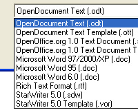
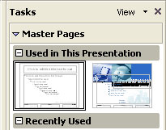
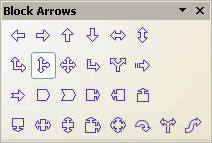
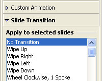
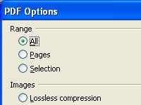
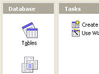
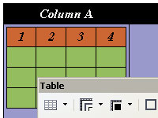
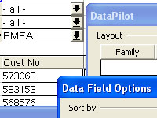
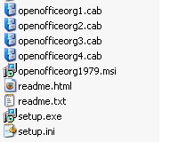

| Introducere |
| OpenOffice.org 2.0 - procesare de texte,
calcul tabelar, prezentari multimedia si multe altele |
OpenOffice.org 2.0 este o suita de programe
tip office care ofera o multitudine de functii si facilitati extrem de utile in munca
zilnica de birou si care este disponibila pentru mai multe sisteme de operare.
Interfata grafica si functionalitatea sunt foarte similare cu cele ale altor
produse consacrate din aceeasi clasa, cum ar fi Microsoft Office sau Lotus
SmartSuite, dar spre deosebire de aceste produse care sunt comerciale, pachetul
de programe OpenOffice.org este total gratuit.
O descriere pe larg a aplicatiei poate fi gasita in paginile produsului
la urmatoarele adrese:
O lista a functiilor introduse in versiunile anterioare ale OpenOffice.org poate
fi gasita in paginile:
|
| Noutati (Click pe imaginile de mai jos pentru a le mari!) |
| Format standardizat si deschis de fisiere XML
(Formatul OASIS OpenDocument) |
|  |
Incepand cu versiunea 2.0, OpenOffice.org utilizeaza
formatul deschis de fisiere XML OASIS
OpenDocument ca format nativ de salvare a fisierelor.
Formatul OASIS OpenDocument este un format de fisiere independent de orice producator
si/sau
implementare si in consecinta, garanteaza libertatea si independenta utilizatorului.
In afara de suita OpenOffice.org insasi, alte suite office precum
KOffice si suita
StarOffice, derivata din OpenOffice.org
folosesc formatul de fisiere OASIS OpenDocument.
OpenDocument este de asemeni unul dintre formatele de fisiere recomandate de catre
Comisia Europeana spre a
fi utilizate in administratie. |
|
| Noua modalitate de vizualizare Multi-Panou |
|  |
Noua modalitate de vizualizare Multi-Panou, sporeste productivitatea si
usureaza utilizarea suitei OpenOffice.org. Acest mod de prezentare integrata si
coerenta a instrumentelor de lucru prin intermediul unei interfete grafice simple
confera utilizatorului accesul comod si rapid la functiile de care are nevoie.
In special, fostii utilizatori ai Microsoft PowerPoint vor gasi acum OpenOffice.org 2.0
mult mai usor de utilizat. |
|
| Noua functie CustomShapes (compatibila
cu cea denumita AutoShapes din MS-Office) |
|  |
OpenOffice.org suporta acum functia CustomShapes
care genereaza forme foarte similare cu cele din Microsoft Office. Consecinta
a acestui fapt este importul si afisarea corecta a formelor generate cu
ajutorul suitei Microsoft Office. CustomShapes este functia care genereaza
forme dupa un anumit tipar dupa care utilizatorul le poate nu numai schimba
dimensiunea dar chiar si forma.
|
|
| Mai multe Efecte, Animatii si Tranzitii pentru prezentari
|
|  |
OpenOffice.org ofera acum mult mai multe efecte
vizuale animate si tranzitii pentru prezentari. Utilizatorii au mai multe
posibilitati acum de a crea prezentari multimedia profesionale.
In plus, suportul extins pentru efecte imbunatateste considerabil compatibilitatea
cu Microsoft PowerPoint. |
|
| Exportul in format PDF a fost imbunatatit |
|  |
OpenOffice.org 1.1 a adus nou exportul documentelor
in format PDF. Versiunea 2.0 imbunatateste aceasta functie.
Incepand cu noua versiune, este posibil sa definiti rata de compresie a imaginilor
continute in document. De asemeni, suportul pentru PDF utilizeaza acum corect imaginile
micsorate de tip thumbnail si hiperlink-urile. |
|
| O noua interfata pentru bazele de date |
|  |
OpenOffice.org a avut din totdeauna interfata
de lucru cu bazele de date, dar in versiunile anterioare aceste functii erau
greu accesibile utilizatorilor.
OpenOffice.org 2.0 face acum managementul bazelor de date ca orice alta aplicatie.
Spre exemplu, Crearea unei noi baze de date se poate face acum din meniu prin
comanda "File -> New". Utilizatorilor incepatori, OpenOffice.org le pune la
dispozitie un nou Wizard pentru Tabele care permite crearea tabelelor in bazele
de date fara a avea cunostinte despre respectiva baza de date sau de limbaj SQL.
Versiunea 2.0 include de asemeni un motor de baze de date denumit
HSQLDB, bazat pe tehnologie JAVA
si care permite crearea de documente de tip "baza de date". Aceasta forma simpla
de baze de date nu necesita suport de tip server (asa cum necesita spre exemplu
MySQL sau Adabas D.). Toate informatiile (definitii de tabele, date, interogari,
formulare, rapoarte) sunt stocate intr-un singur fisier in format XML. |
|
| Wizard pentru Scrisori in Serie |
|
Noul wizard pentru scrisori in serie usureaza
crearea de scrisori catre sute de destinatari diferiti. Wizard-ul ghideaza
utilizatorul pas cu pas prin acest proces. In generarea scrisorilor in serie
se pot utiliza diverse surse de date care sa furnizeze adresele destinatarilor.
|
|
| Functia de numarare de cuvinte mult imbunatatita |
 |
In trecut era posibila gasirea statisticilor
referitoare la document doar in meniul "File - Properties ...". Era de asemeni
posibila doar numararea tuturor cuvintelor dintr-un document. Acum, OpenOffice.org
2.0 permite numararea cuvintelor dintr-o selectie, iar functia Word Count se poate
accesa din meniul "Tools". |
|
| Suport pentru Tabel in Tabel |
|  |
OpenOffice.org 2.0 ofera acum posibilitatea
crearii de tabele in interiorul casutelor altor tabele. Acest lucru mareste
usurinta de utilizare a suitei in general si imbunatateste compatibilitatea
cu Microsoft Word. |
|
| Suport pentru Semnatura Digitala |
 |
O noua si importanta functie adaugata in 2.0 este
posibilitatea utilizarii semnaturilor digitale. |
|
| Suport pentru XForms |
 |
OpenOffice.org 2.0 permite acum crearea de formulare
bazate pe standardul deschis W3C XForms.
Cu ajutorul XForms devine foarte usoara implementarea de algoritmi simpli de procesare,
a formularelor, fara necesitatea de a programa. |
|
| Filtre pentru WordPerfect |
|
OpenOffice.org 2.0 include acum fitre pentru
importul documentelor WordPerfect
filter, filtre create de catre comunitatea open source.
Programatorii sunt invitati sa
contribuie
la acest proiect. |
|
| 65.536 Randuri in Calc |
 |
OpenOffice.org 1.1 era capabil sa
proceseze doar 32,768 de randuri in foile de calcul tabelar, fapt ce crea
probleme de interoperabilitate cu Microsoft Excel. Noua versiune aduce
OpenOffice.org la acelasi nivel cu Microsoft Excel. |
|
| Suport pentru Tabele Pivot imbunatatit |
|  |
Cu ajutorul functiilor DataPilot, in OpenOffice.org 2.0
este acum posibila crearea de noi grupuri, filtrarea datelor pe baza valorilor,
evidentierea diferentelor si procentajelor in loc de valorile absolute, etc, intocmai
ca functia PivotTable din Microsoft Excel.
Noile functii DataPilot transforma
componenta de calcul tabelar (Calc) intr-un instrument puternic de analiza de date. |
|
| Kituri de instalare specifice fiecarui sistem de operare |
|  |
OpenOffice.org 2.0 inglobeaza acum suport
pentru mecanismele de instalare specifice fiecarui sistem de operare. Spre
exemplu, fisierele .MSI si .CAB pentru Microsoft Windows; RPM pentru Linux.
Pentru utilizatorii cu cerinte de management mai sofisticate, Sun ofera
instrumente de management al configuratiei ca parte a pachetului software StarOffice. StarOffice 8 va aduce ca
noutate un set de instrumente de migrare/conversie a Macro-urilor. |
|
| Integrare Nativa Desktop |
|
Aplicatiile OpenOffice.org 2.0 se integreaza
cu succes in mediul desktop specific fiecarui sistem. De aceea, OpenOffice.org
arata si se comporta ca orice alta aplicatie nativa pentru platforma pe care
functioneaza. Sub Windows XP are aspectul vizual al aplicatiilor pentru Windows,
iar sub Linux foloseste sistemele specifice acestui sistem de operare. |
|
| Barele de instrumente mobile |
 |
Barele de instrumente sunt mult mai flexibile in
noua versiune OpenOffice.org 2.0. Este acum posibila mutarea acestora, atasarea
sau desprinderea lor, precum si reconfigurarea lor dupa
necesitatile utilizatorului. |
|
| Suport tehnic, Servicii si Solutii Integrate
|
|
Un numar tot mai mare de companii ofera
suport tehnic,
servicii si solutii integrate pentru
OpenOffice.org.
De asemeni, tot mai multe companii ofera versiuni derivate ale
OpenOffice.org care includ componente si functii aditionale precum instrumente
de configurare si management (ex.
StarOffice from Sun
Microsystems). |
|
| Pentru mai multe informatii |
| Imagini suplimentare |
|
|
| Lista completa de functii si facilitati a OpenOffice.org 2.0 |
|
|
| Pagina produsului OpenOffice.org |
|
|
| Pagini de Blog: Erwin Tenhumberg (SUN Microsystems)
explica noile functii din StarOffice 8 |
|
|
| OpenOffice.org - Pagina centrala de download |
|
|
|


{kind=link}
{kind=link}
{kind=link}
{kind=link}
{kind=link}
{kind=link}
{kind=link}
{kind=link}
{kind=link}
{kind=link}